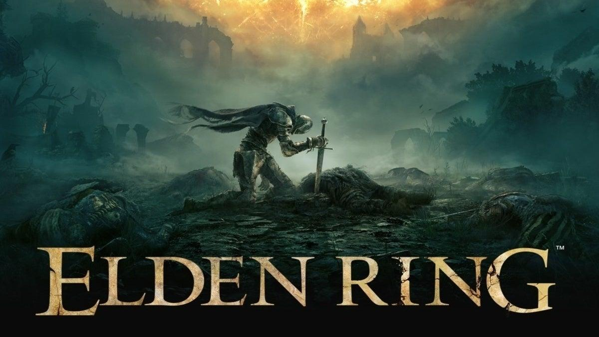

Elden Ring
Elden Ring ha sido uno de los juegos más aclamados del año, ganando múltiples premios, incluyendo Juego del Año en varias ceremonias. Desarrollado por FromSoftware y con la colaboración de George R.R. Martin, este RPG de mundo abierto ha cautivado a los jugadores con su narrativa profunda y su desafiante jugabilidad.

God of War Ragnarök
La secuela del aclamado God of War (2018) ha continuado con su éxito, ganando numerosos premios. Ragnarök ofrece una experiencia narrativa poderosa y una jugabilidad mejorada, consolidándose como uno de los mejores juegos de acción y aventura de la generación.

Horizon Forbidden West
Horizon Forbidden West ha sido reconocido por su impresionante mundo abierto y su narrativa envolvente. Con gráficos deslumbrantes y una jugabilidad mejorada, este juego ha ganado varios premios y ha sido elogiado tanto por la crítica como por los jugadores.